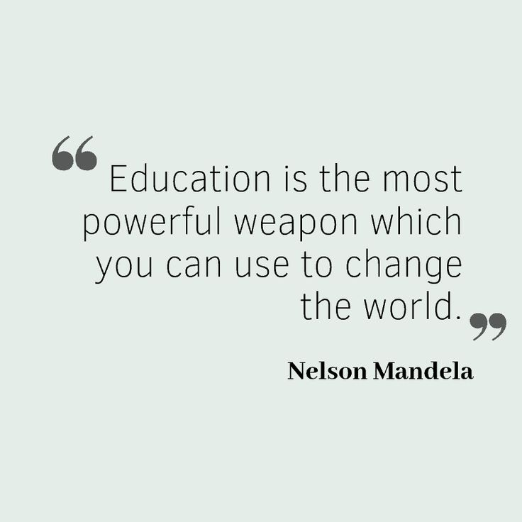
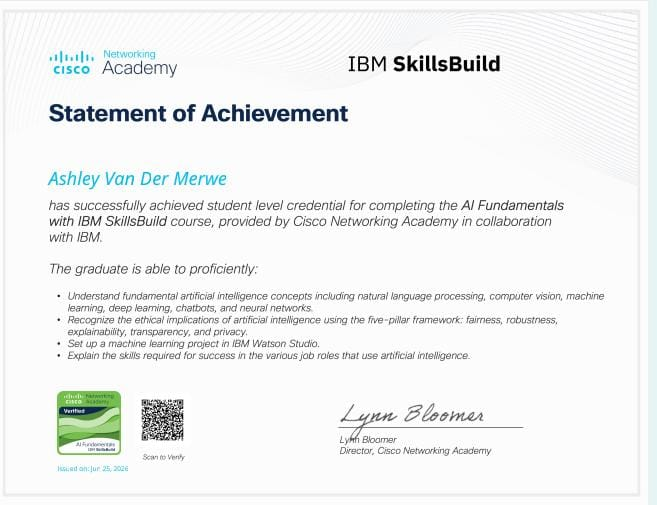
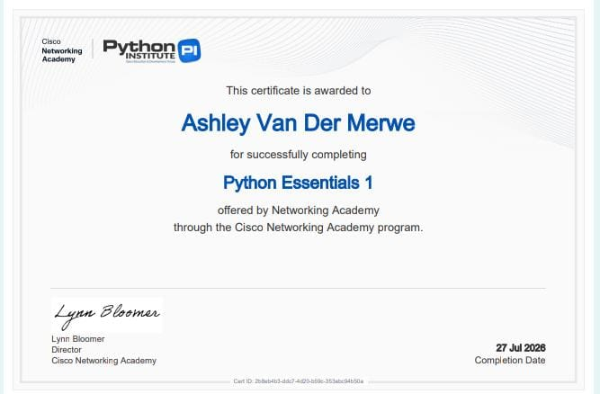
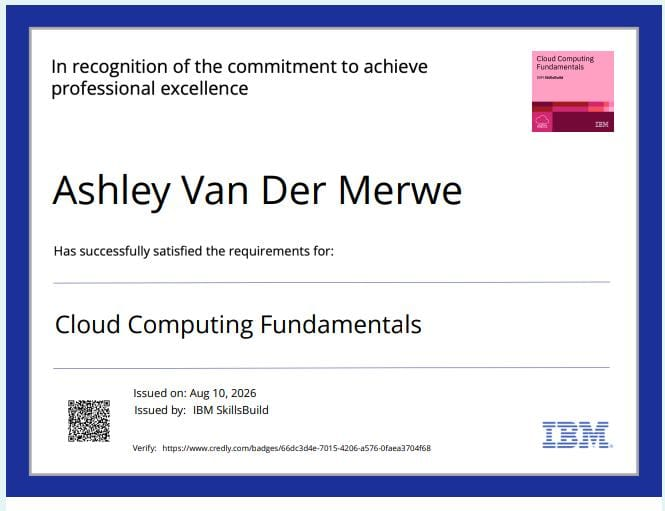

I enjoy exploring different areas of technology, with a particular interest in data analysis, cloud computing, IoT and programming. I am always looking for opportunities to learn new skills, challenge myself and grow beyond one area of technology.

I began my studies at Eastwood Secondary School, where I completed my National Senior Certificate in 2022 with a focus on Science and Mathematics.
My studies in Information and Communications Technology have allowed me to explore different areas of technology, from programming and web development to IoT, data and cloud computing.
Through my studies and independent learning, I have developed a growing interest in understanding how technology can be used to solve real-world problems. My learning journey has also taught me the importance of continuously improving myself and being open to exploring new areas of technology.
I am building practical skills across different areas of technology while continuing to explore the fields that interest me most. I enjoy learning new technologies and developing skills that can be applied to real-world problems.
A collection of courses and certifications that have contributed to my learning and development.
Completed: June 25, 2027
Completed: July 27, 2026
Completed: August 10, 2026
This course gave me the opportunity to explore artificial intelligence in greater depth. Although I had already been introduced to AI through my coursework, the course exposed me to concepts and ideas that were new to me.
One of the highlights was the simulation activity, which made the learning experience more interactive rather than being based entirely on theory.
I was also introduced to IBM's work on AI systems such as Project Debater. Learning about the development of a system designed to debate and reason was fascinating to me.
The development of Project Debater also reminded me that meaningful progress takes time. Its journey included setbacks and losses, which reinforced the importance of perseverance and continuing to improve.

My experience with Python Essentials 1 was great. I had already learned Python through one of my university modules and through additional videos that helped me build my understanding of the language.
The course introduced me to aspects of Python that went beyond simply writing code. I found it interesting to learn about the history of Python, including how the language got its name.
The later stages became more challenging, but I was able to work through them and strengthen my understanding of Python.

This course was very insightful because it allowed me to explore cloud computing beyond what I had learned in my university module.
I learned about containers, cloud providers and different approaches to moving business data from private infrastructure to the cloud.
The simulation was particularly interesting to me because it helped me understand what cloud computing is actually used for in practice. I was able to see examples involving deploying web applications and working with containers.
I also learned that cloud providers may offer similar products while still having services that differentiate them. IBM's focus on hybrid cloud was one example that stood out to me.

Here I showcase projects that have allowed me to apply what I have learned through university, independent learning and practical exploration.
A collection of Python projects developed as part of the practical activities in the FNB App Academy. These projects allowed me to apply Python concepts by building functional programs rather than only working through theory.
Python | Functions | Lists | Dictionaries | Loops | Conditional Statements | Data Processing
View RepositoryA Python contact management program that allows users to add, search, delete and view contacts. Contact information is stored using lists and dictionaries, while functions and conditional logic are used to manage the different actions.
A Python program that processes student marks and generates a grade report. The program calculates each student's average, assigns a grade, determines whether the student passed or failed, and calculates class statistics.
I extended the original grade-report activity by adding additional class-level statistics, including the class average, highest average and lowest average. I also experimented with calculating subject-specific statistics.
A command-line quiz application developed in Python that allows users to test their knowledge of Python, general IT concepts and networking. The program keeps track of the user's score and allows them to continue with another quiz after completing one.
Python | Functions | User Input | Conditional Statements | String Methods | Score Tracking
View RepositoryA five-question quiz covering basic Python concepts, including functions, comments, Boolean data types, output using the print function and the exponentiation operator.
A five-question quiz covering fundamental IT concepts such as the CPU, RAM, routers and software.
A three-question quiz covering basic networking concepts, including IP, HTTP and firewalls.
After completing a quiz, the program asks whether the user would like to continue and allows them to select another quiz category. This creates a simple interactive learning experience rather than ending after a single quiz.
A data analysis and machine learning project using the Appliances Energy Prediction dataset. The project focused on analysing energy consumption patterns and developing machine learning models to predict appliance and lighting energy usage.
Python | Pandas | NumPy | Matplotlib | Seaborn | Scikit-learn | Data Analysis | Machine Learning
View RepositoryThe dataset was explored and analysed to understand patterns in appliance and lighting energy consumption. Data preprocessing and visualisation were used to identify relationships between the variables.
Different regression models were tested, including Linear Regression, Decision Tree Regression and Random Forest Regression. The models were compared to determine which performed best on the dataset.
Random Forest Regression produced the strongest overall results among the models tested. The final model achieved an R² score of 0.6072, with an RMSE of 4.9613 and an MAE of 2.8571.
This project strengthened my understanding of data preprocessing, exploratory data analysis, data visualisation, regression models and model evaluation. It also gave me practical experience applying machine learning to a real-world energy-related dataset.
A machine learning project using the Titanic dataset to predict whether a passenger survived based on characteristics such as passenger class, sex, age, number of siblings or spouses, parents or children, fare and port of embarkation.
Python | Pandas | Scikit-learn | Matplotlib | Seaborn | Data Preprocessing | Logistic Regression | Machine Learning
View RepositoryThe dataset originally contained 891 rows and 12 columns. Unnecessary columns such as PassengerId, Name, Ticket and Cabin were removed, followed by handling missing values. This resulted in a dataset of 712 rows and 8 columns for modelling.
The model used Sex, Age, SibSp, Parch, Fare and Embarked as input features, with Survived used as the target variable.
A Logistic Regression model was developed to predict passenger survival. Categorical variables were processed using OneHotEncoder, while numerical variables such as Age and Fare were standardised using StandardScaler.
The dataset was divided into training and testing sets using an 80/20 split. Model predictions were evaluated using a confusion matrix, which provided a visual representation of the model's classification results.
This project strengthened my understanding of data cleaning, feature preparation, categorical encoding, feature scaling, classification and evaluating machine learning models using real-world data.
Feel free to connect with me through any of the platforms below.
© 2026 Ashley Van Der Merwe. All rights reserved.